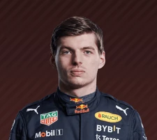
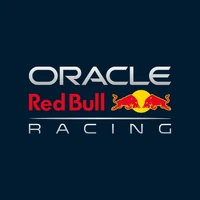

NAVEGUE
Home
Pilotos
Calendário/Tabela
Grand Prix
Construtoras
Últimas Notícias
Página Inicial
SOBRE A FÓRMULA 1
A Fórmula 1 é a maior competição de corrida automobilística do mundo, contando com mais de 770 pilotos de 40 nacionalidades competindo ao redor do mundo, organizada pela FIA, Federação Internacional do Automobilismo que estabele as regras que cada equipe deve seguir. A F1 não é apenas uma corrida de indivíduos, mas de equipes que gastam milhões no desenvolvimento de seus próprios carros para que possam alcançar as mais altas velocidades possíveis, é uma competição de engenheiros, investidores, designers, mecânicos e pilotos vivendo no limite da velocidade.
COMO FUNCIONA A F1
Cada equipe possui 2 carros, ou seja 2 pilotos para cada equipe, e realizam corridas chamadas de Grand Prix, em média os GP tem uma distância de 300km e um limite de tempo de 2 horas. Atualmente 10 equipes competem no Campeonato Mundial de Fórmula 1, o que equivale a 20 pilotos. Os pilotos recebem pontos de acordo com a sua colocação em cada GP e ao fim da temporada é determinado o Melhor Piloto e a Melhor Construtora. Os carros correm a velocidades de até 360km/h e as corridas geralmente possuem um percurso de 305 km e duram de uma a duas horas.
Atual Piloto Campeão Mundial

Max Verstappen
Atual Construtora Campeã Mundial

Red Bull Racing
ÚLTIMAS NOTÍCIAS
Verstappen continua em sua sequência de vitórias com o GP da Espanha
Verstappen consegue a sua quarta Pole Postion da temporada para o GP da Espanha
Verstappen vence o GP de Mônaco garantindo sua quarta vitória da temporada
Verstappen se qualifica para a Pole Position de Mônaco
Ver mais...